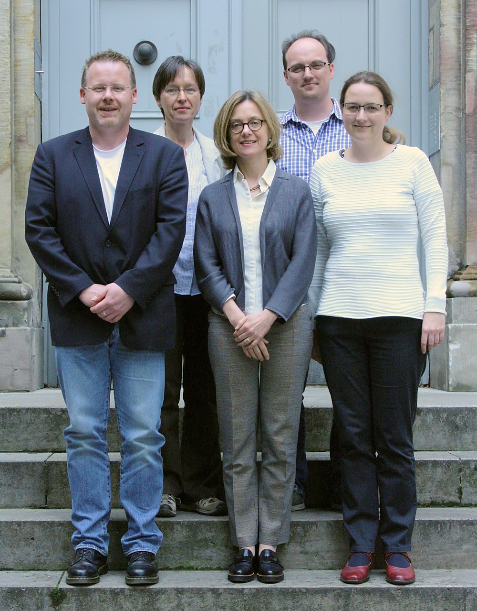

Forschungsverbünde DARIAH-DE und Marbach-Weimar-Wolfenbüttel intensivieren Kooperation
Treffen am 6. Juni 2017 in der DARIAH-Geschäftsstelle an der SUB Göttingen
Die Forschungsverbünde DARIAH-DE und Marbach-Weimar-Wolfenbüttel (MWW) haben vereinbart, ihre bestehende Kooperation weiter auszubauen. Anlässlich der Gründung des „DARIAH-DE Coordination Office“ Ende April 2017 trafen sich dazu Vertreterinnen und Vertreter beider Forschungsverbünde am 6. Juni 2017 in der DARIAH-Geschäftsstelle an der Niedersächsischen Staats- und Universitätsbibliothek Göttingen (SUB Göttingen).
Der Forschungsverbund MWW ist bereits in den Bereichen Forschungsdaten und -Werkzeuge als Kooperationspartner mit DARIAH-DE verbunden. Über die nun beschlossene Verstetigung der Arbeitstreffen zwischen beiden Geschäftsstellen wird die bestehende Zusammenarbeit kontinuierlich weiterentwickelt. Hinsichtlich der Gemeinsamkeiten bei den Aufgaben und in den Strukturen beider Verbünde und insbesondere ihrer Geschäftsstellen sollen zukünftig auch Fragen des Aufbaus einer Geschäftsstelle für Forschungsverbünde in den Geistes- und Kulturwissenschaften erörtert sowie gemeinsame Handlungsfelder identifiziert werden. Im Verlauf des Treffens wurden auch Möglichkeiten von Aufbau und Betrieb eines Informations- und Wissensmanagements in der MWW-Geschäftsstelle unter Zuhilfenahme von DARIAH-DE Diensten erörtert.
DARIAH-DE
DARIAH-DE unterstützt die mit digitalen Methoden und Verfahren arbeitende Forschung in den Geistes- und Kulturwissenschaften. Die Forschungsinfrastruktur besteht aus vier Säulen:
Lehre: Durchführung von Workshops, Bereitstellung von Schulungsmaterialien und Nachwuchsförderung für die e-Humanities
Forschung: Entwicklung von digitalen Tools und Services für die geistes- und kulturwissenschaftliche Forschung
Forschungsdaten: Weiterentwicklung von Standards und Empfehlungen im Umgang mit Forschungsdaten und der Entwicklung eines Forschungsdaten-Repositorys
Technische Infrastruktur: Bereitstellung von IT-Komponenten, wie zum Beispiel AAI, PID-Service, Monitoring und kollaborative Arbeitsumgebungen.
Auf dieser Basis wird der Austausch von Methoden, Daten, Erfahrungen und Ressourcen zwischen den verschiedenen geistes-
und kulturwissenschaftlich arbeitenden Disziplinen ermöglicht und gestärkt. Durch enge Zusammenarbeit mit Fachwissenschaftlerinnen
und Fachwissenschaftlern verschiedener geistes- und kulturwissenschaftlicher Disziplinen wird eine nachhaltige Akzeptanz
und Nutzung der Forschungsinfrastruktur durch die Forschungscommunity möglich.
DARIAH-DE ist eingebettet in das Projekt DARIAH-EU, das in deutsch-französisch-niederländischer Zusammenarbeit geleitet
wird. Auf Grundlage des ESFRI-Roadmap und der Rechtsform ERIC wird die DARIAH-DE-Forschungsinfrastruktur in eine pan-europäische
digitale Forschungsinfrastruktur überführt.
MWW
Seit dem Jahr 2013 bündeln das Deutsche Literaturarchiv Marbach, die Klassik Stiftung Weimar und die Herzog August Bibliothek Wolfenbüttel ihre Forschungsaktivitäten auf Empfehlung des Wissenschaftsrats in einem Verbund, der vom Bundesministerium für Bildung und Forschung gefördert wird. Ziele des Verbunds sind die Erforschung der reichen Sammlungen der drei Einrichtungen durch innovative Forschungsprojekte und Ausstellungen, der Aufbau einer gemeinsamen digitalen Infrastruktur für zukunftsweisende Zugänge zu diesen Beständen sowie deren Erforschung mit Methoden der Digital Humanities.
 Von links nach rechts: Dr. Stefan Schmunk (DARIAH-DE Geschäftsstelle), Dr. Beata Mache (DARIAH-DE Konsortialleitung), Dr. Sonja Asal (Geschäftsführung des Forschungsverbundes MWW), Dr. Carsten Thiel (DARIAH-DE Konsortialleitung), Dr. Mirjam Blümm (DARIAH-DE Geschäftsstelle); nicht auf dem Bild: Martina Kerzel (SUB Projektbüro)